|
Galeria - antes e depois da limpeza do pc Você verá algumas fotos do que provavelmente serão os computadores mais sujos que você já viu na vida e problemas que pode ocorre. 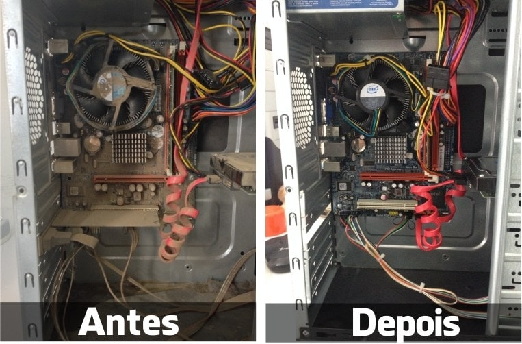 Antes e depois da limpeza do pc Muitas pessoas não sabem mas uma limpeza de computador gera bastante benefício para melhoria do pc. 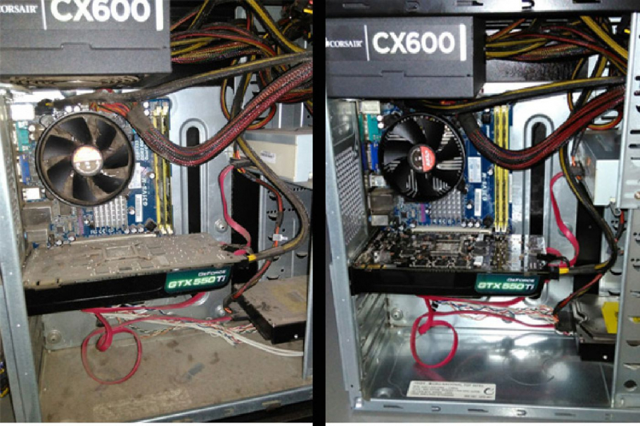 Antes e depois da limpeza do pc Computador usando fonte de qualidade da Corsair. 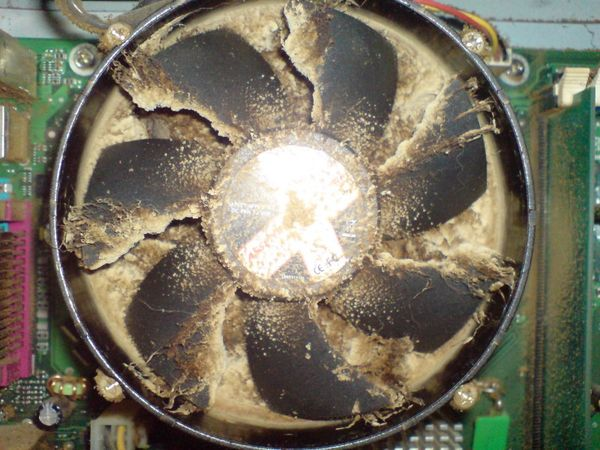 Poeira travou o cooler do processador. 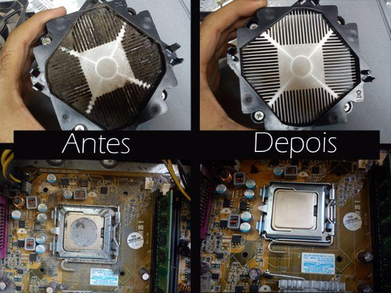 Antes e depois da limpeza do pc Pasta termica ressecada devido ao tempo. Caso tenha se passado mais de um ano da compra do computador, é recomendável trocar a pasta térmica que fica localizada entre o processador e o cooler. Em outros casos, como mau encaixe do processador ou pasta térmica comprometida, o computador ou notebook não irá ligar. Ele não dará qualquer sinal de vida. Quando ela resseca ela prejudica o contato do processador com o dissipador. Ainda mais que o seu processador esquenta bastante. A vida útil da aplicação da pasta de qualidade (base prata) é de aproximadamente 1 ano, dependendo da frequência de uso do sistema. 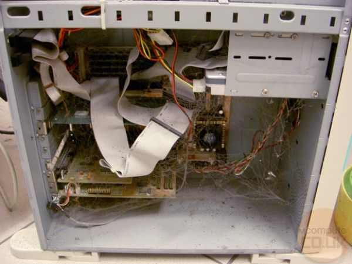 Poeira, teias de aranha, e mais poeira. 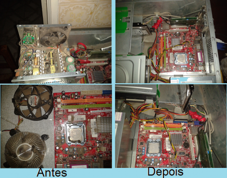 Antes e depois da limpeza do pc Poeira dentro da fonte de alimentação. 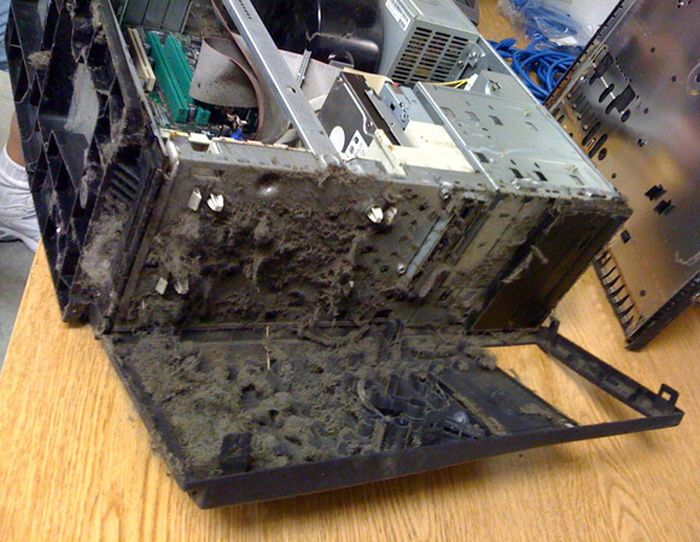 Parte frontal do gabinete com muita poeira. 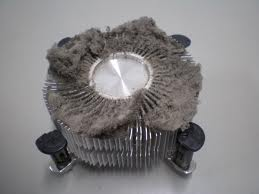 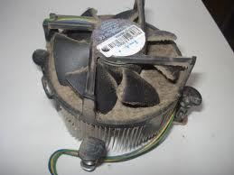 Poeira criou um tapete no cooler do processador. 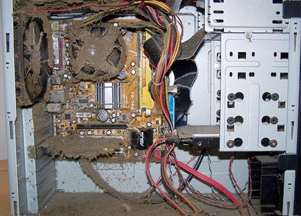 O aquecimento é de longe o pior problema que a sujeira causa, levando algumas vezes a queima de componentes. 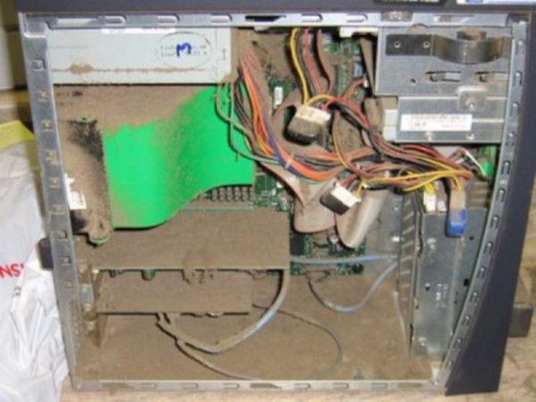 Computador não liga.... 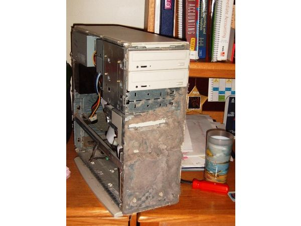 Parte frontal do gabinete com muita poeira. 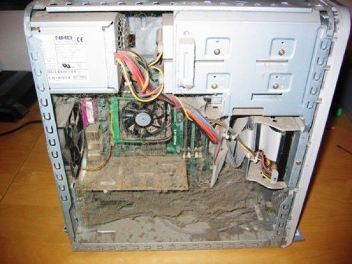 Emitindo só bips... 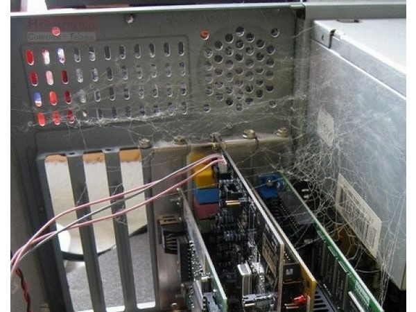 Poeira e teias de aranha. 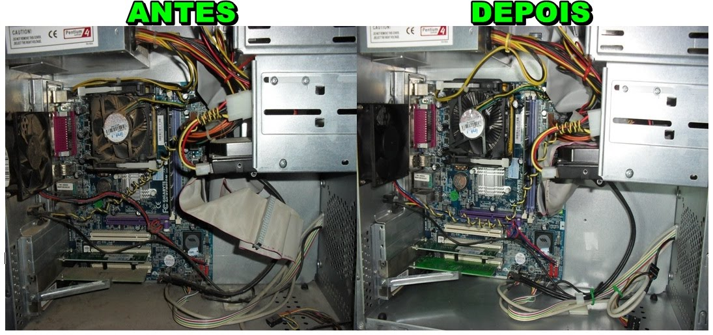 Antes e depois da limpeza do pc 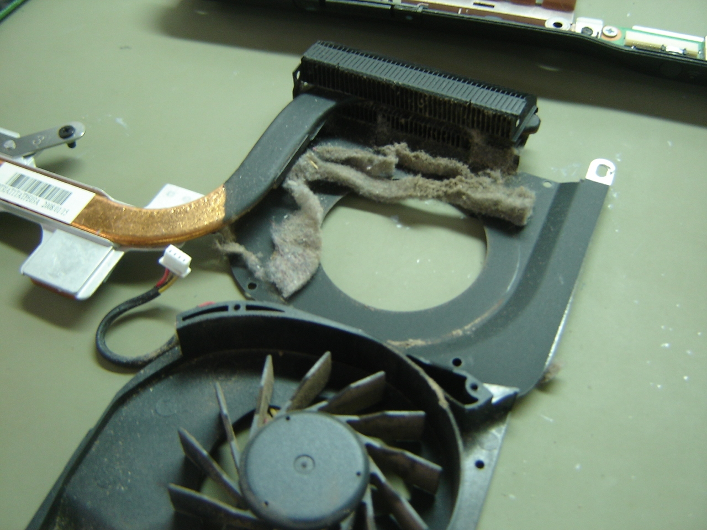 Tapete de poeira no cooler do notebook. 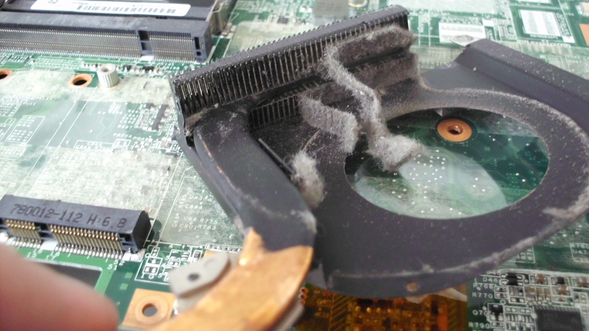 Tapete de poeira no cooler do notebook. 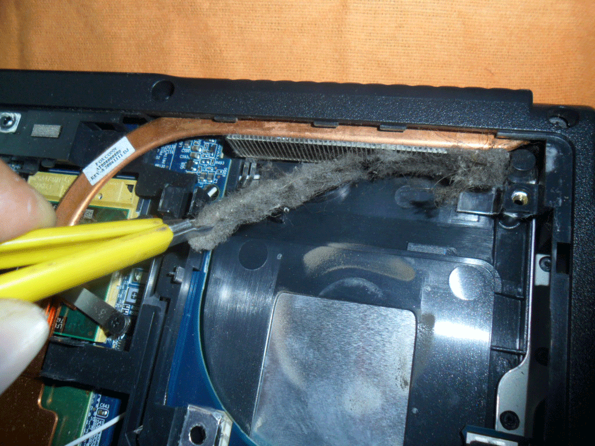 Tapete de poeira no cooler do notebook. 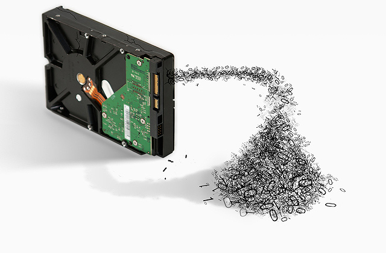 Elimina informação antes de vender seu computador. 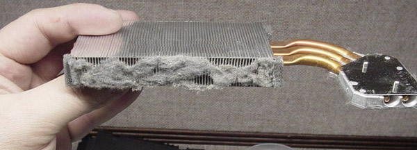 Tapete de poeira no cooler do notebook. Identificar e remover adwares e propagandas seu PC Grande parte dos sites gratuitos que visitamos possuem propagandas, sendo uma forma comum de financiá-lo. Isso não chega a ser um problema, já que eles ficam restritos ao site em si: quando fechamos, não os vemos mais. O problema começa quando os anúncios são onipresentes e aparecem para nós sem a nossa permissão, independentemente do site. |